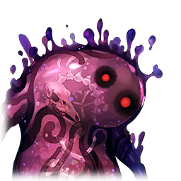

|
 |

ジャム |
グラァァァァァァ!? |

カムイ |
たしかに数は多いが…抵抗は弱い
この調子ならば――！ |
カムイ |
…？ なんだ、この反応は
今までのお役目では、見たことが―― |

マルタ |
…ッ！ 穢れが、増して…？
ダメ、大地の加護が、届かない…！ |
| 巨大ジャム |
フシュルァァァァァァァァァァ!! |
カムイ |
これ、は…？ |
カムイ |
我らの浄化の力に、対抗した？
バカな、ジャムはただ貪り喰らう現象
知能などあるはずが… |
| 巨大ジャム |
フジュリィィ!! |
マルタ |
カムイ！ 避けて！ |
カムイ |
む！ く―― |
カムイ |
ここまで肥大化してしまうと、
ただ浄化の力をぶつけるだけでは
払いきれないか… |
マルタ |
なら――カムイ、私に合わせて |
カムイ |
マルタ？ |
マルタ |
私の“器”としての力を使って、
周囲の正常なアルケミィを集めます |
マルタ |
あなたはそれを、浄化の力に！ |
カムイ |
一か八かの賭けになるが…
ほかに手はないか |
カムイ |
頼む！ |
マルタ |
ええ！ |
カムイ |
“栄光より礎に至りし極光よ――” |
マルタ |
“無より無限は生まれ、
無限より光は生ず――” |
マルタ |
“守り給え、守り給え、守り給え” |
カムイ |
“我が敵に
慈悲なき焔を与えたまえ―！” |
カムイ |
“セフィロンの加護を外れし穢れの輩よ
その嘆き、その悲嘆をここに払う――！” |